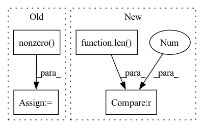

Pattern ID :40702
Before Change
// convert to ids in batch
// TODO reuse this info from above
non_empty_ids = torch.nonzero( non_empty[:, current_slot], as_tuple=False) .squeeze(-1)
indices = non_empty_ids[indices]
// move some of the panels from current_slot to empty_slot in permutationAfter Change
multiple_classes = []
for panel_id in range(empty_mask.shape[-1]):
non_empty_ids = non_empty_ids_per_slot[panel_id]
if len(non_empty_ids) == 0 :
// all panels at this place are empty
empty_att_slots.append(panel_id)
continueIn pattern: SUPERPATTERN
Frequency: 3
Non-data size: 4
Instances Fragment ID: 114988026
Project Name: maria-korosteleva/garment-pattern-estimation
Commit Name: 5bd7820dfa4537e18702ed9f5a1c0a556f65b4c2
Time: 2021-06-22
Author: mariako@kaist.ac.kr
File Name: nn/metrics.py
M Class Name: ComposedPatternLoss
N Class Name: ComposedPatternLoss
M Method Name: _att_cluster_analysis(4)
N Method Name: _att_cluster_analysis(4)
M Parent Class:
N Parent Class:
M File Name: nn/metrics.py
N File Name: nn/metrics.py
M Start Line: 1034
M End Line: 1096
N Start Line: 1034
N End Line: 1099
Before Change
if isinstance(adj, Tensor):
return dense_to_sparse(adj)
else:
idxs = np.nonzero( adj)
edge_index = np.stack(idxs)
edge_weights = adj[idxs]
return edge_index, edge_weights
After Change
edge_attr = adj[index]
if len(index) == 3 :
batch = index[0] * adj.shape[-1]
index = (batch + index[1], batch + index[2])
Fragment ID: 114988027
Project Name: torchspatiotemporal/tsl
Commit Name: 50089afdf23de12eb6d11e9d5e7e64d949d45611
Time: 2022-08-18
Author: ivan.marisca@hotmail.it
File Name: tsl/ops/connectivity.py
M Class Name: AnonimousClass
N Class Name: AnonimousClass
M Method Name: adj_to_edge_index(2)
N Method Name: adj_to_edge_index(1)
M Parent Class:
N Parent Class:
M File Name: tsl/ops/connectivity.py
N File Name: tsl/ops/connectivity.py
M Start Line: 92
M End Line: 114
N Start Line: 106
N End Line: 145
Before Change
if isinstance(adj, Tensor):
return dense_to_sparse(adj)
else:
idxs = np.nonzero( adj)
edge_index = np.stack(idxs)
edge_weights = adj[idxs]
return edge_index, edge_weights
After Change
edge_attr = adj[index]
if len(index) == 3 :
batch = index[0] * adj.shape[-1]
index = (batch + index[1], batch + index[2])
Fragment ID: 114988030
Project Name: torchspatiotemporal/tsl
Commit Name: f28e5a2fddc34eeb90a13c113512c8ab12b6138b
Time: 2022-07-20
Author: ivan.marisca@hotmail.it
File Name: tsl/ops/connectivity.py
M Class Name: AnonimousClass
N Class Name: AnonimousClass
M Method Name: adj_to_edge_index(2)
N Method Name: adj_to_edge_index(1)
M Parent Class:
N Parent Class:
M File Name: tsl/ops/connectivity.py
N File Name: tsl/ops/connectivity.py
M Start Line: 92
M End Line: 114
N Start Line: 106
N End Line: 145